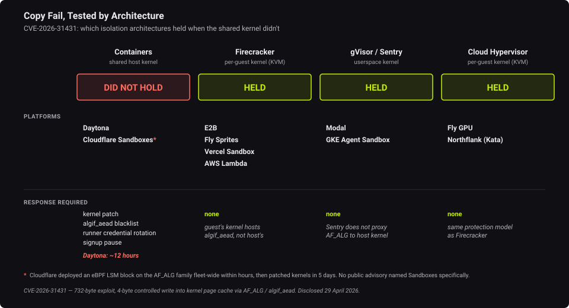
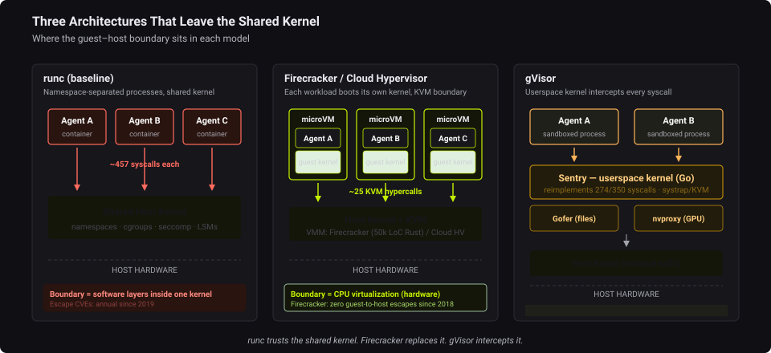

Why containers
aren't enough for
untrusted agents
Choosing an isolation boundary that matches the threat.
Shekhar Patil · Last9
What is an agent?
An LLM in a loop that takes actions, keeps state, and acts in the world, not a chatbot, not RPA.
The boundary that holds doesn't share a kernel.
A container is a packaging tool. For code that wants out, it is not a security boundary.
zero-trust test: does it make escape impossible, or just tedious?
"Just run it in a container."
Right answer for code you wrote. For an agent running LLM-generated, prompt-injected code, it's the wrong boundary.
A container is a Linux process with namespaces + cgroups. Namespaces change what a process sees. They don't change what the kernel does.
One kernel. 457 doors.
Docker's default seccomp blocks ~49. vs ~25 KVM hypercalls to reach a host
from a separate-kernel micro-VM.
seccomp throttles the shared kernel; a separate kernel removes it.
Container escapes land every year.
| Year | Where | CVE | What happened | CVSS |
|---|---|---|---|---|
| 2019 | runc | CVE-2019-5736 | Overwrite host runc via /proc/self/exe | 8.6 |
| 2020 | containerd | CVE-2020-15257 | Escape via containerd-shim API | 5.2 |
| 2022 | CRI-O | CVE-2022-0811 | "cr8escape": host compromise via sysctl | 8.8 |
| 2024 | runc | CVE-2024-21626 | "Leaky Vessels": fd leak → host filesystem | 8.6 |
| 2025 | runc | CVE-2025-31133 +2 | Three escapes: masked paths, mount races, LSM bypass | High |
AWS: "we don't consider containers a security boundary."
Copy Fail: which boundaries held

CVE-2026-31431: a 732-byte exploit. Containers didn't hold; every separate-kernel architecture did.
Four boundaries, four attack surfaces
| Model | Boundary | Attack surface | Who uses it | ZT tier |
|---|---|---|---|---|
| Containers (runc) | Shared kernel | ~457 syscalls | Docker, Daytona | not a boundary |
| gVisor | Userspace kernel (Go) | 274/350 syscalls | Modal, GKE | Enterprise |
| microVM (Firecracker) | Separate kernel, KVM | ~25 hypercalls | e2b, Fly, Lambda | Advanced |
| Full VM | Separate kernel, full hypervisor | hypervisor surface | traditional cloud | Advanced |
tiers per Anthropic's zero-trust isolation guidance: sandboxed-exec = Enterprise, hardware isolation = Advanced.
Three teams, three architectures

Firecracker (own kernel, zero escapes since 2018) · gVisor (kernel in Go) · Cloud Hypervisor (own kernel + GPU)
When the host isn't in your trust boundary
What CoCo adds
Kata + SEV-SNP / TDX: VM-grade isolation plus encrypted memory + remote attestation. The host operator can't read the agent's RAM. The strongest "keep my data with me."
The cost
Specific hardware, limited cloud regions, attestation infra to operate, larger TCB, ~500-VM/host density cap. And it still doesn't stop the agent's own prompt-injected code.
Choose it when you run untrusted code and don't trust the host. Otherwise a plain micro-VM is enough.
The whole industry converged here.
Cloud
e2b, Modal, Fly, Vercel, AWS Lambda & Bedrock AgentCore: separate kernel per session.
Apple
apple/containerization (macOS 26): every Linux container in its own VM, sub-second boot.
Microsoft
MXC (Build 2026): policy-driven agent isolation, micro-VM mode on the roadmap.
When AWS, Google, Apple, and Microsoft all pick the same boundary, that's the signal.
Pick the boundary, not the default.
Own the host & trust the code? A container is fine.
Running code the LLM wrote at runtime? Don't share a kernel.
shekhar@last9.io